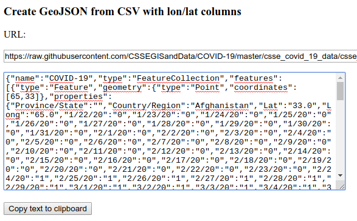
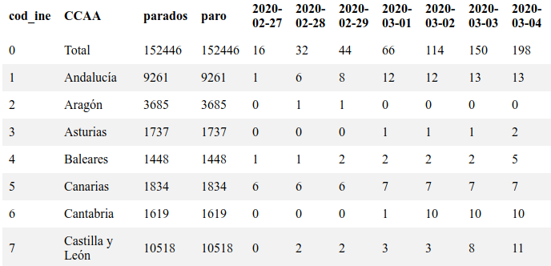
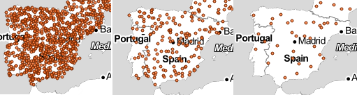
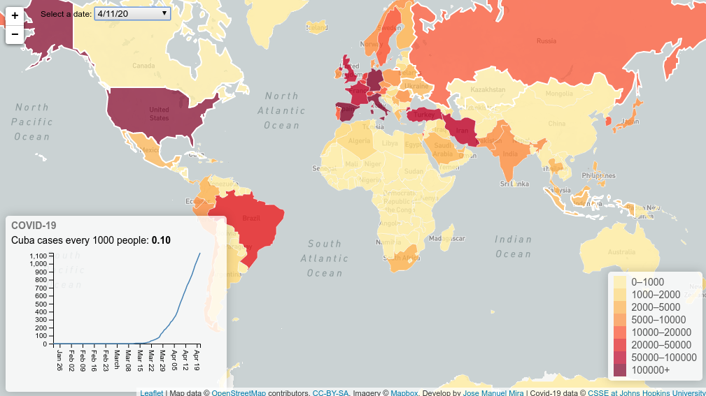
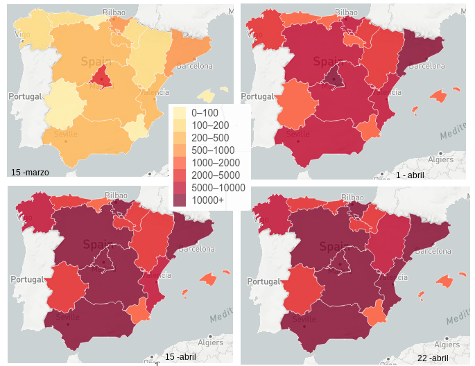

Bienvenido a COVID-19 interactive maps.
English version
Sí no quieres leer más y sólo quieres ver las demostraciones aquí las tienes listadas:
Con cartografía dinámica (se puede elegir la fecha):
- Mapa de densidad de puntos (density map)
- Mapa de infectados por países
- Mapa de infectados por cada 1000 habitantes (países)
- Mapa de infectados por cada 100.000 habitantes (países) + TOP10
- Mapa de infectados por cada 100.000 habitantes (países) + TOP10 + animación
- Mapa de fallecidos por países
- Mapa de fallecidos por cada millón de habitantes (países)
- Mapa de infectados por Comunidades Autónomas
- Mapa de símbolo graduado con infectados por países
Con tablas:
Con gráficas:
Dada la situación mundial en que nos encontramos (abril 2020), donde la población está confinada en sus viviendas (caso de España) he querido aprovechar el tiempo disponible para investigar sobre las posibilidades que ofrece la cartografía para ofrecer la información de una forma más atractiva que las frías tablas de cifras.
El punto de partida de este proyecto era y es ofrecer a los desarrolladores la capacidad de mostrar cartografía en sus respectivos portales de una manera fácil y desatendida. Por ello la cartografía debía de cumplir los siguientes requerimientos:
- Utilizar una API de mapas 100 % libre. En este sentido he optado por utilizar Leaflet como motor para publicar los mapas
- El resto de librerías Javascript utilizadas son también de dominio público, y muy extendido su uso por los desarrolladores. Principalmente he utilizado: D3 y JQuery. También he utilizado Turj.js, una excelente librería para el geoprocesamiento espacial en Javascrpit
- Los datos geográficos deberán estar en un formato también libre y extendido en el mundo de la geomática. En este sentido se ha optado "GeoJSON". He utilizado 2 conjunto de datos muy simplificados, con pocos vértices, para que su carga sea rápida
- Los datos estadísticos proceden de fuente públicas y abiertas, y están disponibles en formato CSV. En ningún momento he descargado los datos para tratarlos. Estos se conectan por AJAX desde sus respectivos servidores, realizando online una unión entre columnas (JOIN en terminología GIS). La actualización de los datos es por tanto la de estas fuentes. Hasta ahora (18 de abril 2020) ésta es diaria. Las fuentes que he utilizado son:
Casos de estudio
Generación al vuelo de un GeoJSON a partir de un CSV con coordenadas
Este ejemplo no contiene cartografía, pero muestra las capacidades para generar "al vuelo" un GeoJSON con todos los datos.
Si deseas ver el resultado puedes copiar el resultado al portapapeles y visualizarlo en el visor http://geojson.io
Unión de dos ficheros CSV (al vuelo) y generación de tabla HTML
Este ejemplo tampoco contiene cartografía, pero muestra las capacidades para realizar una unión de dos tablas (CSV) que tienen en común el contenido de una columna (que no es lo mismo que el nombre de la columna). Por ejemplo tenemos una tabla con un listado de unidades administrativas (por ejemplo municipios), con una columna con su código -en el caso de España es el código INE -. Esta tabla se une con otra que también tiene una columna con ese código.
 |Mapa de densidad de puntos (density map)
Este tipo de mapas ya no suelen ser muy habituales pero hay que reconocer que unido a su simpleza está la capacidad de comunicar claramente un fenómeno. Muchos hemos visto el típico mapa de puntos, donde un punto representa una determinada cantidad de elementos (votos, cabeza de ganado, etc). Pues este ejemplo llevado al caso del COVID-19 nos da una idea de como un mismo dato (casos) cambia su interpretación en función del número de elementos que identifican a un punto.
Veamos un ejemplo de España, para valores de 200, 1000 y 5000 casos por punto.

Esta web dispone de un control deslizador (slider) para seleccionar el número de casos por cada punto. Está en la parte inferior izquierda.

Para realizar esta función he utilizado la función de generar un punto en en polígono incluida en TurfJS
|Mapa coroplético de una fecha elegida por el usuario

La idea que me inspiró para hacer este mapa es de nuevo la unión de ficheros, en este caso un CSV con los casos del COVID-19 con una GeoJSON de polígonos con los países. Quise aprovechar que en el fichero CSV estaban recogidos todos los casos por países desde el inicio de los registros (22 de enero) hasta la actualidad, para añadir un combo desplegable con las fechas para que el usuario puede ver la evolución de la pandemia.
Para que los datos sean comparativos entre fechas la leyenda es fija, por lo que en los primeros días da la sensación de que no ocurre nada
También he querido incluir un gŕafico lineal sobre la evolución de la pandemia en cada país, activando el efecto cuando te posicionas encima del elemento (hover), haciendo también uso de la excelente librería D3.js.
Otra de la las utilidades que he añadido ha sido mostrar un listado con los 10 países con mayor número de fallecidos por millón de habitantes
Por último puedes disponer de un control de vídeo para poder ver una animación de como he evolucionado la pandemia desde que se disponen de datos.
||
|
Mapa coroplético por Comunidades Autónomas (España).
Es el mismo ejemplo que el anterior, con otra fuente de datos local y adscrita a otro nivel coroplético, en este ejemplo nos referimos a los afectados por COVID-19 en cada Comunidad Autónoma

Por desgracia, como continúen el incremento de casos el mapa será monocolor, salvo que cambie el valor de los intervalos de clase.
|Mapa coroplético de fallecimientos por COVID-19 por países
Es el mismo ejemplo que el de los paises pero con los fallecimientos.

Uno aspecto a destacar es que al poder utilizar las columnas de dos conjuntos de datos, se pueden crear campos calculados. En este caso, se puede ver en el gráfico como aparece la cifra de los fallecimientos por millón de habitantes
Otra de las utilidades es poder ver un listado con los 10 países con mayor número de fallecidos por millón de habitantes.
Finalmente podemos ver una animación de como ha ido evolucionando la pandemia, utilizando el control video
||
|
Mapa de símbolo graduado
Sin lugar a dudas este es el mapa más impactante, donde podemos apreciar por fechas (slider en la parte inferior) como va evolucionando los contactos, pero mostrados como un símbolo graduado.
Quiero agradecer el interesante artículo "Time Series Proportional Symbol Maps with Leaflet and jQuery que me ha permitido realizar este mapa
|Múltiples gráficos de barras
Cada vez estoy más satisfecho con las posibilidades de la librería D3.js. Su capacidad para hacer gráficos es increibles.

En este ejemplo utilizo los datos de un CSV con afectados de Covid-19 por Comunidades Autónomas (España) para obtener un gráfico por cada una de ellas, incluyendo además diferenciación de barras por colores para facilitar la interpretación del gráfico y de unificar valores.
|Enlaces de interés
Este proyecto utiliza las siguientes librerías JS o datos
- Leaflet JS: excelente y sencilla API de mapas
- TurJS: Geoprocesamiento espacial en Javascript
- AlaSql: SQL for JSON data
- Potente librería para manejo de datos y representación de gráficos
- OpenStreetMap: Sin lugar a dudas el mapa libre más completo
- A modern JavaScript utility library delivering modularity, performance & extras
- Johns Hopkins University - Center for Systems Science and Engineering
- Periodismo de investigación, datos y nuevas narrativas para salir del ruido
Autor y contribuciones
Los ejemplos de esta web han sido realizados por José Manuel Mira Martínez. Sí se ha utilizado código de otro proyecto libre en el código fuente aparece citado.
Contacto
Puedes ponerte en contacto en esta dirección de correo: josema.mira@gmail.com